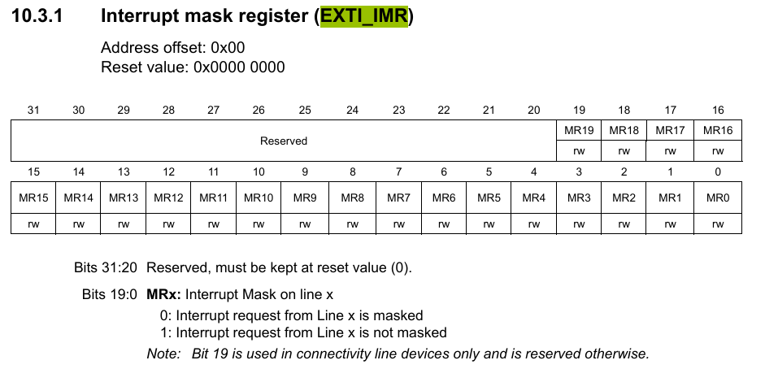

从EXTI实现看Embassy:异步Rust嵌入式框架
本文最后更新于 2026年2月8日 下午
Embassy是一个基于Rust的异步嵌入式开发框架：
Embassy: The next-generation framework for embedded applications
Embassy不仅包含了异步运行时，还提供了STM32、RP2xxx，NRF等芯片的异步HAL实现、usb、[蓝牙(trouble)](embassy-rs/trouble: A Rust Host BLE stack with a future goal of qualification.)等，乐鑫官方的esp-rs也是将embassy作为默认框架使用。
最近研究了embassy-stm32的部分实现，写在博客里作为记录吧。Exti最简单也有点Async味，就先写这个吧。
注意：本文撰写时，Embassy尚未1.0 release，此文可能在您读的时候已经过时。为了博客的清晰，部分代码被简化。
EXTI
EXTI 是 Extended Interrupts and Events Controller 的缩写，即“扩展中断和事件控制器”。
它的核心作用可以概括为一句话：让STM32能够响应来自外部（或内部通道）的异步信号，如IO上升沿、IO高电平，并在这些事件发生时触发中断或事件请求，从而执行特定的任务，尤其擅长将MCU从低功耗模式中唤醒。
embassy-stm32的exti驱动，我们从顶向下看。
源码链接：embassy/embassy-stm32/src · embassy-rs/embassy
整个代码的逻辑如下：

ExtiInput<’d>
1 | |
这是可被用户直接使用的ExtiInput类型。
其内部包含了一个Input类型（其实Input类型内部也是包含了一个FlexPin类型）
构造函数
1 | |
new函数我们主要说一下 impl Peripheral<P = T::ExtiChannel>：
impl Peripheral<...>: 表明pin必须是一个实现了Peripheraltrait 的类型。Peripheral用来标记硬件外设所有权，来自embassy-hal-internal。<P = T>: 这是一个关联类型约束，意味着这个外设的实体类型就是泛型T（比如peripherals::PA4）。<P = T::ExtiChannel>：T::ExtiChannel是TraitT的关联类型，这个我们将在下面看到。它意味着这个外设的实体类型要与 “与T对应的ExtiChannel” 的类型匹配。+ 'd: 这是一个生命周期约束，确保传入的外设引用至少和ExtiInput实例活得一样长。这在处理外设的可变借用时非常重要。
这个类型限制是这样的：
T是GpioPin，是某个引脚的类型（比如PA4，PA5，都是单独的类型，都可以是T）
pin 参数要走了 T 的所有权，目的是使得用户无法直接将PA4再用作I2C。其形式通常是单例Singleton，也就是传统rust hal库结构的let p = Peripheral.take() 所获得的外设的所有权（以后可能单独写博客讲单例）。
ch 参数限定了其自身必须是T的关联类型ExtiChannel （P = T::ExtiChannel），我们在下面细说，这要求了channel必须与pin对应，比如PA4必须提供EXTI4。
类型系统
EXTI单例（Singleton）类型的定义在_generated.rs（由build.rs生成的）中的embassy_hal_internal::peripherals_definition!宏中。
1 | |
这些外设信息来自芯片的CubeMX数据库。经过stm32-data和embassy-stm32宏的层层处理，实现了完善的类型限制和不同型号间高度的代码复用。
Channel Trait
Exit的Channel Trait使用了密封（Sealed）Trait，这样可以保证Channel Trait在包外可见，但是不能在外部被实现（因为外部实现privite trait SealedChannel ）
1 | |
在实现上比较简单，embassy-stm32使用宏来简化了代码。
1 | |
Pin Trait
Pin Trait同样使用了Sealed Trait。AnyPin部分我们先不研究，我们只看Exti部分：Pin Trait设置了一个关联类型，指向exti::Channel Trait。
1 | |
在Impl上也是用了大量的codegen和宏，其最终是 foreach_pin 这个宏：(foreach_pin的原型在build.rs生成的_macro.rs内，稍微有点绕，不再详细叙述)
1 | |
其它IO复用也是通过codegen和宏实现的。比如，经过数据处理后，可能生成这样的代码：
1 | |
这种情况下就限制死了alternate function，从而在编译期就能发现问题，而且通过代码提示就能获知可用的IO而不用翻手册。不得不说，这就是人们希望类型系统所做到的！
wait_for_high
1 | |
这个self.pin.pin.pin.pin()有够吐槽的。解释起来是这样的： ExtiInput.Input.FlexPin.PeripheralRef<AnyPin>.pin()。
我们看见的wait_for_high或是wait_for_rising_edge新建了一个ExtiInputFuture，我们来看看：
ExtiInputFuture<’a>
1 | |
ExtiInputFuture并不存储外设实例，而只存一个pin_num，这有利于所有权的编写和更加灵活。实际上，STM32也只有16个Channel嘛，我们可以用一些全局标志位。
new和drop
1 | |
new函数使用了一个critical_section。“critical_section::with 创建了一个临界区。在嵌入式系统中，临界区是一段在执行期间不会被中断打断的代码。对于单核微控制器，最简单的实现方式就是临时禁用所有中断（这也是默认实现）。这确保了在配置 EXTI 寄存器这种需要多个步骤的操作时，不会被一个突如其来的中断打乱，从而保证了操作的原子性。
new函数初始化了选择引脚端口、设置触发边沿等与EXTI相关的寄存器（就不展开细看了），最后一行设置了IMR（Interrupt mask register）寄存器，表示取消屏蔽（Mask）该位，此时该通道可产生中断。

impl Future (poll)
1 | |
在这里我们实现了 Future trait。使得 ExtiInputFuture 可以用于 async/await 机制。
Future trait 代表一个异步计算/运行的结果，可以被执行器（executor）轮询（poll）以检查是否完成。 在 poll 方法中，我们做了以下几件事：
注册
waker： waker是唤醒器。因为持续的轮询会消耗大量的cpu资源(如果持续poll，那就是nb模式）。所以，一个聪明的executor仅第一次和被waker唤醒后，才会执行一次poll。这里的唤醒者是中断函数。EXTI_WAKERS是一个全局的AtomicWaker数组，每个pin对应一个AtomicWaker，用于存储waker。poll调用时会将waker存入EXTI_WAKERS[self.pine]，这样当中断发生时，可以使用这个waker唤醒Future。检查中断是否发生：它通过检查IMR寄存器判断中断是否发生。因为我们的中断函数(
on_irq)在触发后会立刻通过imr(0).modify(|w| w.0 &= !bits)来屏蔽该中断线。所以，如果在poll时发现IMR位被清零了（即被屏蔽了），就说明在我们await的这段时间里，中断已经来过了。这时就可以返回Poll::Ready了。如果IMR位仍然是1（未屏蔽），则说明中断还没来，返回Poll::Pending继续等待。” 这样就把poll和on_irq的行为联系起来了，逻辑更清晰。
提一下，AtomicWaker这个底层实现在embassy-sync中，平台有Atomic的情况下用AtomicPtr实现，没有的话用Mutex实现。
中断
on_irq
1 | |
on_irq 函数的主要作用是在外部中断发生时，处理触发的 ExtiChannel 并唤醒相应的 Future。
- 读取
PR（Pending Register）或者RPR/FPR（Rising/Falling Edge Pending Register）因为多个EXTI线可能共用一个中断向量，所以on_irq首先读取PR来确定具体是哪些线触发了中断。 - 通过修改
IMR（Interrupt Mask Register），屏蔽已触发的中断通道，以防止重复触发。 - 为了处理多个Channel都触发的情况，Embassy通过
BitIter(bits)遍历所有触发的pin，并调用EXTI_WAKERS[pin as usize].wake()唤醒相应的Future。这个BitIter会在下面讲到。 - 在
EXTI.pr或EXTI.rpr/EXTI.fpr中清除对应的位，以便后续的中断可以正确触发。
绑定
Embassy通过一系列宏将EXTI中断绑定到on_irq上。
1 | |
因为EXTI中断比较复杂，有多个外设共用一个中断向量的情况，而且不同的系列共用中断向量的情况还不一样，在exti上难以使用bind_irqs!这样的模式、embassy_stm32的其它外设，以及embassy_rp等hal都是使用的bind_irqs!。这其实是将更多的中断访问权交给了用户。
但是exti就不行了，想要让hal不占用中断向量，就只能关闭exti feature来关闭整个模块，或者关闭rt feature，自行管理启动和所有中断。
BitIter
1 | |
BitIter 是一个简单的位迭代器，用于遍历 bits 中的所有 1 位。
trailing_zeros() 返回最低有效位（LSB）之前 0 的个数。然后self.0 &= !(1 << b) 清除该位，以便在下一次 next() 调用时继续遍历。
这种方式确保了 on_irq 处理多个 EXTI 事件时能够逐一唤醒对应的 Future。
embedded_hal
exti.rs还提供了embedded_hal（略） 和 embedded_hal_async Trait的实现：
1 | |
然后我们就可以愉快地使用：
button.wait_for_low().await啦！
总结
这个EXTI模块复杂性比较低，主要用于EXTI最低级也是最常用的用法：等待上升沿、等待高电平等。
但是由于stm32系列太多，又有很多EXTI15_10这种共用向量情况，embassy-stm32直接接管了所有EXTI中断（对于普通向量则一般使用bind_interrupts的模式）。所以如果用户想用EXTI完成更加复杂和即时的操作，就只能关闭exti feature来关闭整个模块，或者关闭rt feature，自行管理启动和所有中断。
Embassy HAL设计了一套优秀的类型系统和HAL范式，为社区提供了学习榜样。其类型系统一部分在embassy-hal-internal中完成，一部分在HAL内部完成。通过这套类型系统和约束，我们可以避免很多恼人的错误，也能很大程度上简化代码（比如，永远不会设置错、忘设置IO AF，也不用再去查AF表）。
embassy-stm32 的创新主要是其codegen和metapac：使用了复杂的数据预处理和codegen实现了对stm32外设的包罗万象。stm32-data 通过来自CubeMX等的数据，生成带有元数据的PAC：stm32-metapac，避免了像stm32-rs 一样的重复和分散、不统一的代码。
当然，包罗万象是有代价的。好在对于用户来说基本感受不到。比如：embassy/embassy-stm32/build.rs 极其芜杂的代码，hal内部复杂的宏嵌套和不清楚的内部宏命名（尤其是codegen生成的_macro.rs的那些macro）。
这些代价在我编写维护py32-hal的时候深深体验过。。不过，吃水不忘挖井人，没有embassy-stm32就不会有py32-hal，只是这套框架对于py32太过于庞大了。到后面，我做 sifli-rs 虽然使用了embassy范式，但是重做了codegen流程。